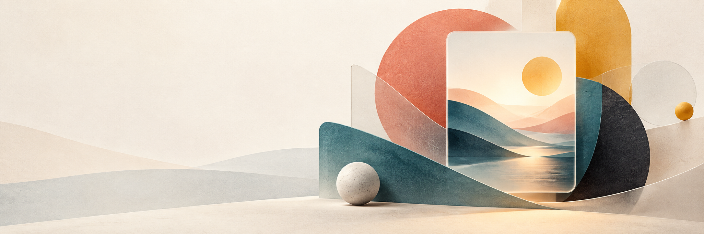

image2
studio
OpenAI-compatible image workspace
未连接

IMAGE2 / CREATIVE CANVAS
把想象，变成画面
连接你的模型，开始一场视觉实验。
03 / PROMPT
描述你想看到的画面
填入示例
0 / 4000
⌘ + Enter 生成
Editorial
Architecture
Botanical
image2
·
1024 × 1024
·
1 image
生成图像
⌘↵
04 / LIBRARY
历史记录
0 images
还没有历史记录
生成的图片会自动保存在此浏览器中。